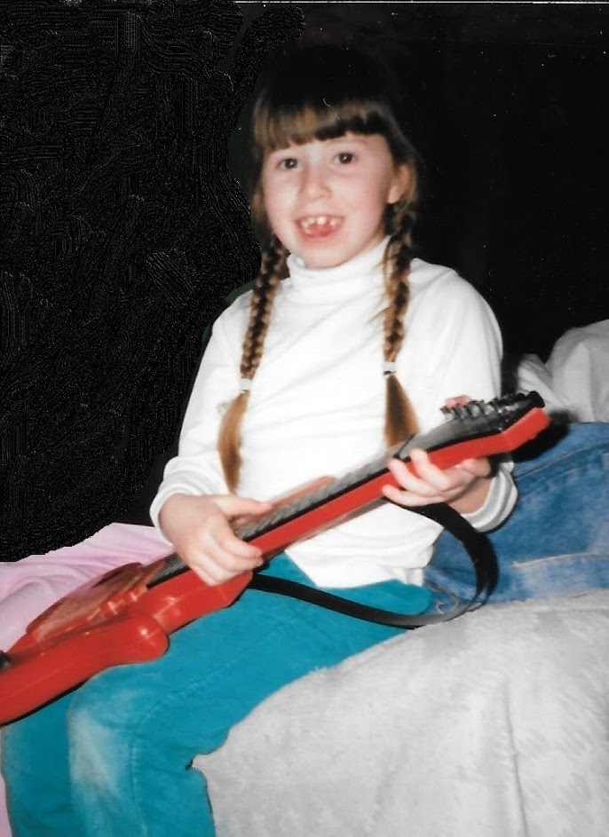

Life Dynamic Music Therapy was founded in 2010 by newly board-certified music therapist Kelly Garland. Kelly found that there was a need in the community for diversified and out-of-the-box music therapy services. Since 2010, LDMT has grown in the diversity and outreach of music therapy services to include a variety of people and locations served.
Life Dynamic Music Therapy is proud to serve the surrounding Metro-Ann Arbor area, and looks forward to continuing to branch out and provide quality music therapy services that uphold the principles of social justice, dependability, and creativity.
Life Dynamic music therapy upholds these values as demonstrative of our mission. Life Dynamic Music Therapy operates with compassion for each person. Access to creativity and fostering a creative lifestyle. Social justice and equality for all, regardless of diagnosis, provided a focus for services. Life Dynamic Music Therapy is set on creating an environment that supports positive energy, unconditional positive regard, and open communication with clients, parents, caregivers, and families.
Life Dynamic Music Therapy upholds a commitment to professional growth and development, education, research, and using best practices in utmost importance. Most of all, Life Dynamic Music Therapy prides itself in honoring the dignity of each individual, while respecting and acknowledging their values and personal convictions.
Call now for an initial music therapy consultation and/or assessment at 734-680-5561, or email LifeDynamicMT@gmail.com for more information.
